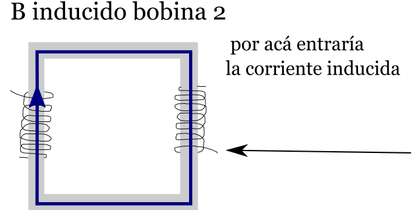
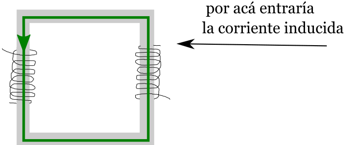

Transformadores
Un transformador es básicamente un toroide
con dos bobinados, uno conectado a una fuente y el otro
desconectado.
La corriente inducida en el bobinario secundario
Sin saber bornes homólogos: Tenemos que fijarnos el enrollamiento.
Primer ejemplo
Supongamos que tenemos este caso:
El campo B generado por esa corriente en la bobina 1 va a ser, respetando "la regla de la mano derecha" en vista a como entra la corriente y como està enrollado el bobinado 1:

Otro ejemplo:
En este caso la corriente también aumenta en el tiempo y el B del primer bobinado toma la dirección verde. Como en el caso anterior necesitamos un B que vaya en sentido contrario, para eso, la corriente inducida debe entrar por la "pata de arriba".

Un último ejemplo:

Supongamos que ahora tenemos un campo que entra por donde indica la flecha y disminuye en el tiempo. Para que el B total en el tiempo tienda a ser el inicial entonces el Binducido va a tratar de "ayudar" al B que se va haciendo cada vez más chico, entonces ambos B van a tener iguales sentidos y para que el B inducido acompañe al otro va a tener que entrar por la "pata de abajo.
Con bornes homólogos: El enrollamiento no nos
importa.
Bueno, básicamente se usan los mismos principios, pero teniendo en cuenta la definición de bornes homólogos (*).
No me interesa saber si el borne está arriba o está abajo o lo que sea para este caso, solo voy a poder decir que:
*Si tengo una I(t) que aumenta
en el tiempo, el B inducido que quiero generar
va a tener que ser un B inducido en sentido opuesto
al que se genere en la bobina primaria, por lo tanto, la
corriente inducida entraría por el borne no homólogo.
*Si tengo una I(t) que disminuye
en el tiempo, el B inducido que quiero generar
va a tener que ser un B inducido en el mismo
sentido al que se genere en la bobina
primaria, por lo tanto, la corriente inducida entraría por
el borne homólogo.
Si no sé cómo está enrollado el bobinado no puedo
saber el sentido del B!!! Sólo puedo saber la
"relación de sentidos" entre los B's. Para hacer un
ejercicio más completo podemos pedir saber cómo es el
enrollado y cuáles son los bornes homólogos.(*) Consultar en la guía de física ii